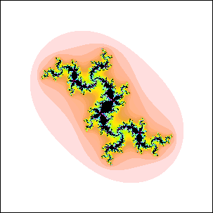

| 1. Starting from z0 = 0, compute z1, ..., z10 using
zn+1 = zn2 + c using |
| (a) c = -1.75 |
| (b) c = -.1 + i |
| what deductions can up make about whether these c values belong to the quadratic Mandelbrot set?
Give a reason to support your answer. |
| Here is the solution. |
| |
| 2. Which of these points |
| (a) c = -0.5, |
| (b) c = -i, |
| (c) c = -1+i |
| belong to the quadratic Mandelbrot set? Give the calculations that support your answers. You
need use no more than 10 iterates to draw your conclusions. Carry four digits to the right
of the decimal. |
| Here is the solution. |
| |
| 3. (a) Which of these c-values, c = -2, c = -1,
c = 1, and c = i, belong to the quadratic Mandelbrot set? |
| (b) Which of these c-values, c = -2, c = -1,
c = 1, and c = i, belong to the cubic Mandelbrot set defined by iterating
zn+1 = zn3 + c, starting from z0 = 0? |
| Here is the solution. |
| |
| 4. Which of these points |
| (a) c = 0.5, |
| (b) c = i/2, |
| (c) c = -5/4 |
| belong to the quadratic Mandelbrot set? Calculate z1, ..., z6 to
support your answers. Show your calculations.
Carry four digits to the right of the decimal. |
| Here is the solution. |
| |
| 5. For each of these z0, find a c value for which z0 belongs
to the quadratic Julia set Jc. |
| (a) z0 = 1, |
| (b) z0 = -1, |
| (c) z0 = 2, |
| Give the calculations that support your answers. |
| Here is the solution. |
| |
| 6. (a) The large disc pictured here is attached to the main cardioid
of the quadratic Mandelbrot set. Suppose for the points c in the small disc labeled B, the iterates
of z0 = 0 converge to a 15-cycle. To what cycle will the
iterates of z0 = 0 converge for c in the disc labeled A? Give a reason
to support your answer. (The apparent position of A around the cardioid is not a
sufficient reason.) |
|
| (b) The c-value for this Julia set belongs to a disc of the quadratic Mandelbrot set, but not
to one attached to the main cardioid. To what cycle will the
iterates of z0 = 0 converge for c in this disc? Give a reason
to support your answer. |
|
| Here is the solution. |
| |
| 7. Here are pictures of four quadratic Julia sets. |
|
| Here are four views of parts of the quadratic Mandelbrot set. |
|
| Each Julia set corresponds to a point in the largest complete disc in one of the Mandelbrot set
pictures. Say which corresponds to which and give a reason for your answer. What cycle corresponds to each Julia set?
|
| Here is the solution. |
| |
| 8. (a) The large disc pictured here is attached to the main cardioid
of the quadratic Mandelbrot set. Suppose for the points c in the small disc labeled B, the iterates
of z0 = 0 converge to a 21-cycle. To what cycle will the
iterates of z0 = 0 converge for c in the disc labeled A? Give a reason
to support your answer. (The apparent position of A around the cardioid is not a
sufficient reason.) |
|
| (b) The c-value for this Julia set belongs to a disc of the quadratic Mandelbrot set, but not
to one attached to the main cardioid. To what cycle will the
iterates of z0 = 0 converge for c in this disc? Give a reason
to support your answer. |
|
| Here is the solution. |
| |
| 9. In this exercise we consider three discs attached to a disc attached to the
main cardioid of the quadratic Mandelbrot set. Which could be the periods of the three
discs? Give reasons for your answers. |
| (a) 12, 20, 28 |
| (b) 12, 19, 28 |
| (c) 12, 21, 28 |
| Here is the solution. |
| |
| 10. Which of these Julia sets are for c-values of a disc attached
to the main cardioid of the quadratic Mandelbrot set? Give reasons for your answers. |
(a)  | |
(b)  | |
(c)  |
|
| Here is the solution. |
| |
| 11. Which of these c-values belong to the quadratic Mandelbrot set? c = 0.2, c = 0.4,
c = -1 + .3i, c = -1 + .4i. Do 10 iterates, unless the answer is clear with fewer. Carry
three digits to the right of the decimal. |
| Here is the solution. |
| |
| 12. Pictured below are several discs attached to the main cardioid of
the quadratic Mandelbrot set. Give the cycle numbers of each disc, A, B, C, and D.
Explain how you arrived at your answers. |
 |
| Here is the solution. |
| |
| 13. Does the c of this Julia set lie outside the quadratic Mandelbrot set, in
a disc attached to the main cardioid of the Mandelbrot set, or to a disc attached to
a disc attached to the main cardioid? Give reasons for your answer. |
 |
| Here is the solution. |
| |
| 14. Here is a picture of the quadratic Mandelbrot set with six points, a through f, labeled. |
 |
| Here are pictures of six Julia sets, labeled 1 through 6. Say which Julia set
corresponds to what point in the Mandelbrot set. Give a reason for each of your choices. |
|
| Here is the solution. |
| |
| 15. Here is a picture of a small part of the main cardioid of the quadratic Mandelbrot set,
along with some discs attached to it. Give the cycles corresponding to each of the
labeled discs, A, B, and C. Give a reason for each of your choices. |
 |
| Here is the solution. |
| |
| 16. Does c = i/4 belong to the cubic Mandelbrot set, defined by iterating
zn+1 = zn3 + c, starting from
z0 = 0? Calculate z1, ..., z6 to support your
answer. Carry four digits to the right of the decimal. Show your calculations. |
| Here is the solution. |
| |
| 17. Which of these Julia sets cannot be the Julia set for c in a disc attached to
the main cardioid of the quadratic Mandelbrot set? Explain your reasoning. |
(a) (b)
(b) |
| Here is the solution. |
| |
| 18. Is this the Julia set for some c in the quadratic Mandelbrot set, or
for some c outside the quadratic Mandelbrot set, or is it neither of these? |
| The filled-in regions are solid areas, not the result of taking too low a maximum
number of iterations. |
|
| Here is the solution. |
| |